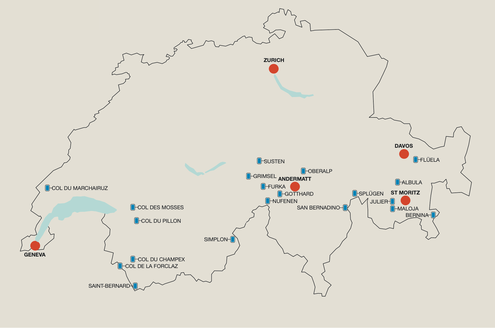

It was a mountain pass that brought together the communities that became Switzerland.
The Saint Gotthard pass was created in 1220 for the farmers of central Switzerland to trade with Northern Italy and eventually as a route to the Mediterranean. In August 1291 these central regions became Uri, Schwyz and Unterwalden - the first three cantons that formed the Helvetic Confederation - the official name of Switzerland. Today the 26 cantons that make up Switzerland are home to over 90 road passes, 50 of which are over 1200 metres in elevation - this is in addition to the many trail and rail passes.
These mountain passes were once a vital part of the country's transportation network but today are increasingly tourist attractions offering stunning views and challenging driving or cycling routes. All of today's passes have a hard surface with the Umbrail being the last to be fully surfaced in 2015. The most important trade or transport routes now have a rail and road tunnel alternative to limit disruption by snow. The summits of today's passes are remnants of the past, with hostels used by ancient travellers becoming abandoned or converted into trinket shops or museums.
Map of Switzerland's mountain passes
Swiss mountain passes
Select a pass for more opening information, statistics and a map.
- Index
- Albula pass
- Bernina pass
- Col de Champex
- Col de la Croix
- Col de la Forclaz
- Col du Marchairuz
- Col des Mosses
- Col du Pillon
- Flüela pass
- Furka pass
- Great Saint-Bernard pass
- Gotthard pass
- Grimsel pass
- Jaun pass
- Julier pass
- Klausen pass
- Lukmanier pass
- Majola pass
- Nufenen pass
- Oberalp pass
- Ofen pass
- San Bernardino pass
- Simplon pass
- Splügen pass
- Susten pass
- Umbrail pass
- Pass Data